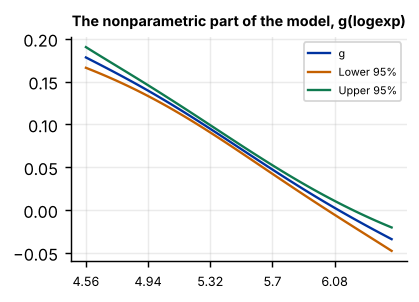

Run this model on your own data in Open Econometric Systems →
Step 1The question and the model
What is the effect of x on y when another variable z has an unknown effect? The model is
with \(g\) unknown and smooth. Taking the expectation given \(z\) and subtracting gives \(y - E(y|z) = (x - E(x|z))'\beta + \varepsilon\). Robinson (1988) replaces the two conditional means by kernel regressions and applies least squares to the residuals; \(\hat\beta\) is root-n consistent and has the usual standard errors. The function \(g\) is then estimated from the remaining variation.
How to write it: the model
We estimate a partially linear model of food spending on the number of kids and log wages, with log total expenditure entering through an unknown function. Following Robinson (1988) we remove the function by kernel regression with a cross-validated bandwidth and estimate the coefficients by least squares on the residuals. We plot the estimated function, compare the fit with linear and polynomial controls, check the coefficients against different bandwidths, and show in a simulation that a linear control biases the coefficient when the true function is curved.
Step 2Load the data
import numpy as np
import pandas as pd
import oes_engine as oes # pip install -e open-econometric-systems/oes-engine
d = pd.read_csv("engel95.csv")
print(len(d), "households")
print(d[["food", "nkids", "logwages", "logexp"]].describe().round(2).loc[["mean", "std", "min", "max"]])1655 households
food nkids logwages logexp
mean 0.21 0.62 5.86 5.42
std 0.10 0.49 0.54 0.45
min 0.00 0.00 2.20 3.61
max 0.69 1.00 8.09 7.43How to read it
There are 1,655 households. The food share of the budget averages 0.21 (standard deviation 0.10), the child indicator is coded 0 or 1 and 62% of households have the value 1, log wages averages 5.86 and log total expenditure averages 5.42 with a range from 3.61 to 7.43. The question is the effect of children and wages on the food share once total expenditure is allowed to enter in any smooth way.
Step 3Estimate the model
spec = dict(y="food", x=["nkids", "logwages"], z="logexp")
r = oes.run("plm", d.to_csv(index=False), spec)
oes.summary(r)
oes.show(r, "Partially linear")Observations: 1655
nkids coefficient: 0.0548
logwages coefficient: 0.0156
Bandwidth for g: 0.4151
Partially linear model (Robinson 1988)
Coefficient Robust s.e. z p OLS, linear in z OLS, quadratic in z OLS, cubic in z
Variable
nkids 0.0548 0.0040 13.6118 0.0000 0.0548 0.0546 0.0543
logwages 0.0156 0.0047 3.3121 0.0009 0.0158 0.0158 0.0155
Note: Dependent variable: food; nonparametric in logexp; 1655 observations. Bandwidths for the residualising smooths: food 0.415, nkids 0.188, logwages 0.076.How to read it
Households with children spend 0.055 more of their budget on food (robust standard error 0.004, z = 13.6), and a higher log wage raises the share by 0.016 per log point (standard error 0.005, z = 3.3, p = 0.0009). These estimates are almost the same as those from least squares with log expenditure entered linearly (0.0548 and 0.0158), with a quadratic (0.0546 and 0.0158) or with a cubic (0.0543 and 0.0155). The residualising smooths use bandwidths of 0.42 for food, 0.19 for the child indicator and 0.08 for log wages.
Step 4Is the control linear?
oes.show(r, "Nonparametric part")
oes.show(r, "Residual sum")
oes.plot(r)Nonparametric part g(logexp)
g Lower 95% Upper 95% Slope
logexp
4.5637 0.1781 0.1660 0.1902 -0.0979
4.7533 0.1593 0.1507 0.1679 -0.1017
4.9428 0.1393 0.1330 0.1456 -0.1095
5.1323 0.1178 0.1129 0.1227 -0.1180
5.3218 0.0948 0.0905 0.0990 -0.1241
5.5114 0.0710 0.0666 0.0753 -0.1262
5.7009 0.0472 0.0422 0.0522 -0.1239
5.8904 0.0242 0.0180 0.0305 -0.1183
6.0800 0.0025 -0.0056 0.0106 -0.1111
6.2695 -0.0180 -0.0287 -0.0072 -0.1045
Note: Local linear fit of y - X b on logexp, bandwidth 0.415; bands ignore the smoothing bias.
Residual sum of squares
RSS
Specification
Polynomial of degree 1 in logexp 10.6906
Polynomial of degree 2 in logexp 10.6899
Polynomial of degree 3 in logexp 10.6734
Nonparametric in logexp 10.6676
Note: The nonparametric part is flexible, so its in-sample RSS is lower by construction; the question is whether it is much lower than the best polynomial.
How to read it
The estimated function falls from 0.178 at log expenditure 4.56 to -0.018 at 6.27: the food share declines as total expenditure rises, as in Engel's law, by about 0.10 to 0.13 per log point, with the steepest part near 5.5. The residual sum of squares is 10.691 for a straight line, 10.690 for a quadratic, 10.673 for a cubic and 10.668 for the nonparametric fit, a gain of less than 0.2%. In these data the Engel curve is almost a straight line in log expenditure, which is why the linear model gives the same coefficients.
Step 5Robustness: the bandwidth
print("bandwidth for the residualisation nkids logwages")
for h in (0.1, 0.2, 0.4, 1.0, 3.0):
e = oes.run("plm", d.to_csv(index=False), dict(spec, bandwidth=h))
print(f"{h:20.1f} {e['summary'][1]['value']:18.4f} {e['summary'][2]['value']:9.4f}")
import statsmodels.api as sm
X = sm.add_constant(np.column_stack([d.nkids, d.logwages, d.logexp, d.logexp ** 2]))
m = sm.OLS(d.food, X).fit()
print("OLS with a quadratic in logexp: nkids", round(m.params[1], 4), ", logwages", round(m.params[2], 4))bandwidth for the residualisation nkids logwages
0.1 0.0553 0.0156
0.2 0.0548 0.0157
0.4 0.0545 0.0157
1.0 0.0547 0.0158
3.0 0.0548 0.0158
OLS with a quadratic in logexp: nkids 0.0546 , logwages 0.0158How to read it
The coefficients hardly move with the bandwidth used to remove log expenditure: from 0.0545 to 0.0553 for the child indicator and from 0.0156 to 0.0158 for log wages with bandwidths between 0.1 and 3.0, and they agree with the quadratic control (0.0546 and 0.0158). A very large bandwidth turns the smooth into a straight line, so the last row is the linear model.
Step 6Diagnostics: bias from a linear control
rng = np.random.default_rng(1)
print("true beta = 2; g(z) = 2 sin(2z)")
rows = []
for _ in range(20):
n = 800; z = rng.uniform(0, 6, n); x = 0.5 * np.sin(z) + rng.normal(size=n)
y = 2 * x + 2 * np.sin(2 * z) + rng.normal(0, 0.5, n)
t = pd.DataFrame(dict(y=y, x=x, z=z))
e = oes.run("plm", t.to_csv(index=False), dict(y="y", x=["x"], z="z"))
b_ols = np.linalg.lstsq(np.column_stack([np.ones(n), x, z]), y, rcond=None)[0][1]
rows.append((e["tables"][0]["rows"][0][1], b_ols))
rows = np.array(rows)
print(f"partially linear: mean {rows[:,0].mean():.3f}, s.d. {rows[:,0].std():.3f}")
print(f"OLS with z linear: mean {rows[:,1].mean():.3f}, s.d. {rows[:,1].std():.3f}")true beta = 2; g(z) = 2 sin(2z) partially linear: mean 1.990, s.d. 0.021 OLS with z linear: mean 1.851, s.d. 0.062
How to read it
In a simulation where the true coefficient is 2 and the function is 2 sin(2z), correlated with x through sin(z), the partially linear estimator is centred on the truth (mean 1.990, standard deviation 0.021 over 20 samples), and least squares with z entered linearly is biased downward (mean 1.851, standard deviation 0.062), a bias of more than two of its own standard deviations. The bias appears only when the control is both curved and related to x; in the Engel data the curve is nearly straight, and nothing is lost.
Step 7Write the results
How to write it: results
We estimate the effect of children and wages on the food budget share of 1,655 households with a partially linear model (Robinson 1988), in which log total expenditure enters through an unknown function estimated by local-linear smoothing. Households with children spend 5.5 percentage points more of the budget on food (standard error 0.4), and a higher log wage raises the share by 0.016 (standard error 0.005, p < 0.001). The estimated function falls with expenditure at about 0.10 to 0.13 per log point and is close to a straight line: the residual sum of squares is only 0.2% lower than with a linear control, and the coefficients are the same to the third decimal place for linear, quadratic and cubic controls and for bandwidths between 0.1 and 3. A simulation shows that a linear control would bias the coefficient when the true function is curved and related to the regressor, so the agreement here is a finding about these data.
References. Robinson (1988), Econometrica; Engle, Granger, Rice and Weiss (1986), Journal of the American Statistical Association; Yatchew (1997), Economics Letters; Delgado and Mora (1998), Journal of Applied Econometrics (the Engel95 data).